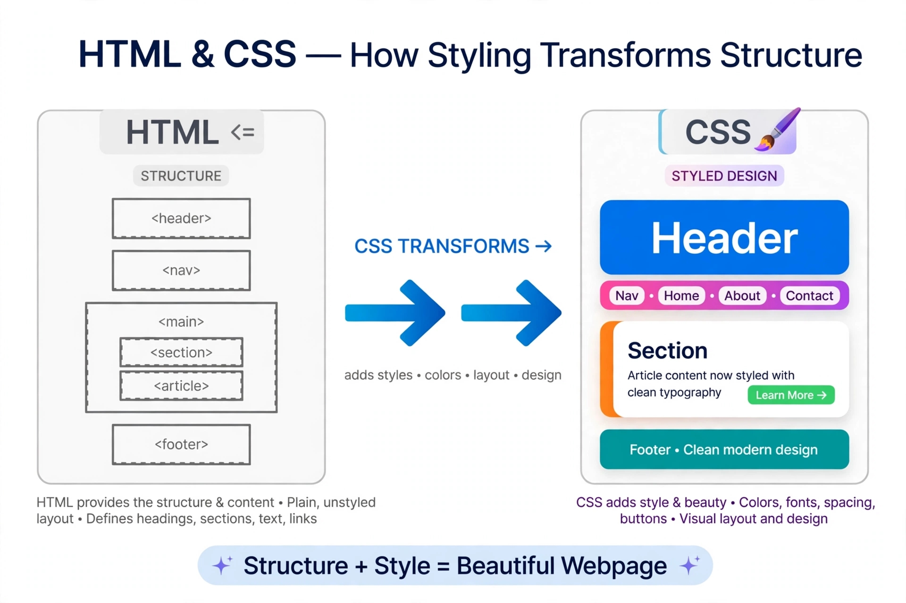

الاسم: Shahd Suliman Suliman Mohamed Elshehawy
الرقم الجامعي: 2500380
تعتبر لغة CSS هي المسؤولة عن لمسات الجمال في صفحات الويب. بينما HTML تبني الهيكل، CSS تضيف الألوان والتنسيق.
CSS هي اختصار لـ Cascading Style Sheets وتستخدم للتحكم في شكل عناصر HTML.

| الطريقة | المكان | الميزة |
|---|---|---|
| Inline | داخل الوسم | سريع |
| Internal | داخل head | لصفحة واحدة |
| External | ملف خارجي | الأفضل |